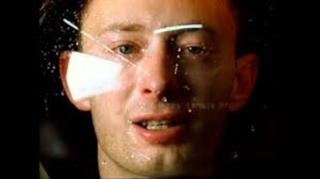
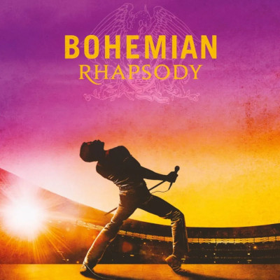

Sobre o site
O site fala sobre três músicas: Beanie - Chezile, No Surprise - Radiohead, Bohemian Rhapsody - Quenn. Vamos descorrer sobre elas com a inteção de apresenta-las ao ouvinte, marcando-o.
Música: Beanie - Chezile
A música Beanie escrita por Chezile descreve sobre o distânciamento de um casal, evidenciado em versos como “Hear it in your tone / You're slowly letting go” (Ouço no seu tom / Você está aos poucos deixando ir).
Ela disperta no ouvinte uma sensação de remorço e nostaugia.
Música: No Surprise - Radiohead
A música No Surprise escrita por Radiohead é sobre um desejo por uma vida sem estresse, mas que pode ser interpretado como a busca pela paz através da anestesia, ou mesmo uma referência sutil ao suicídio
Música: Bohemian Rhapsody - Queen
Freddie, escritor da música, nunca revelou o verdadeiro significado de Bohemian Rhapsody, então a música um mistério tanto para os fãs quanto para os outros membros da banda. Sempre muito criativo e indecifrável, Mercury dizia que cada um podia definir o significado que desejasse.
